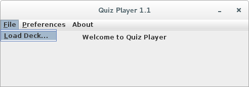

Welcome to the Quiz Manager Player manual.
You will find here all the information about the Quiz Player, how to take quizzes, the settings you can change and so on.
Here are the few steps you need to follow to take a Quiz with Quiz Player.
The Quiz Player is a Java Archive. Therefore you will need a Java Runtime Environment installed on your system to launch it. Usuallly a double-click on the icon will launch the application. If it doesn't, try right click and Open with: Java Runtime (JRE) or similar.
As an alternative, you can type "java -jar Quiz-Player-v1.1.jar" in the command line where you have stored the Quiz Player archive.
If none of these work, try to get the latest Java Runtime Environment (JRE) from the Oracle website.
The following window should now appear on the screen.
The next step is to choose a Deck in your file system
A Deck is a set of questions. In Quiz Manager, each Question is made of:
Decks are stored on your file system as 'Deck files' (.dk).
Warning!
As far as I know, no other program uses this extension. But if you happen to find a .dk file which doesn't look like a Quiz Manager Deck, it is probably best to avoid opening it.
To choose a Deck on your file system, you will need to click on the File -> Load Deck menu item.
This will open a File chooser windowlike the one just below that will let you choose Deck file on your system. You can use the filter either display all the files or only your folders and the Deck (.dk) files.
After you have chosen a Deck in your file system, the Quiz Player will prompt you to choose a Quiz Mode.
The test mode is rather simple. You will go through all the question of the Deck once. As soon as you provide an answer, the next question will be presented to you.
Once you have been through all the question contained in the Deck, your score will appear. For instance, a score of 2/3 means you gave 2 correct answers out of 3 questions.
The learning mode is a bit more complicated. Depending on what you answer to a question, different things can happen.
If you give a wrong answer, before going to the next question, an explanation will appear. Hopefully whoever created the Deck put enough information for you to answer correctly next time.
If you give a correct answer you will either see a congratullation message or directly go to the next question. This can be changed to your preference in the options.
The questions contained in the Deck will keep reapearing until you provide enough good answers. By default, this number is 3, but you can change it in the options.
You will encounter two kinds of display during a Quiz.